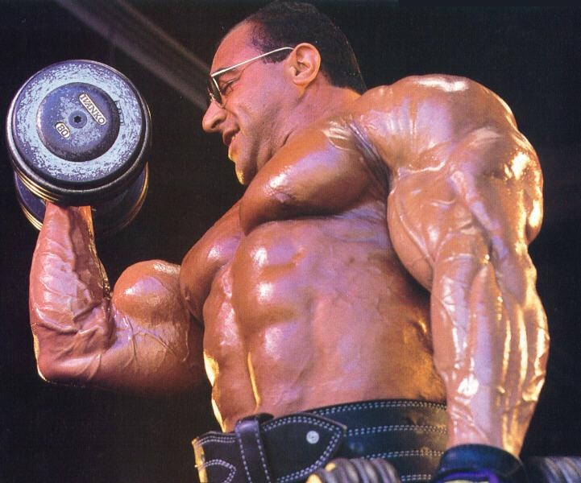

Nasser El Sonbaty, noto anche come "The Professor", è nato il 15 ottobre 1965 ad Alessandria d'Egitto. Cresciuto in una famiglia di appassionati di sport, ha dimostrato fin da giovane un talento naturale per il bodybuilding. Si trasferì in Germania da adolescente, dove iniziò a sviluppare la sua passione per il fitness e il sollevamento pesi. La sua determinazione e il suo impegno lo hanno portato a diventare uno dei bodybuilder più noti e rispettati della sua generazione.
La carriera agonistica di Nasser El Sonbaty ha avuto inizio negli anni '80. Dopo aver vinto il titolo di Mr. Universo nel 1983, ha continuato a competere a livello nazionale e internazionale, ottenendo numerosi successi. Nel 1990, ha ottenuto la sua carta professionale IFBB e ha iniziato a competere nei circuiti professionali. El Sonbaty è noto per il suo fisico massiccio e ben proporzionato, con una muscolatura densa e definita che gli ha permesso di competere con successo contro alcuni dei migliori bodybuilder del suo tempo. Ha ottenuto numerosi piazzamenti di rilievo, incluso un 2º posto al Mr. Olympia nel 1997.
La filosofia di bodybuilding di Nasser El Sonbaty è caratterizzata da un approccio metodico e scientifico. Conosciuto come "The Professor" per la sua attitudine analitica, El Sonbaty ha trascorso anni a studiare l'anatomia e la fisiologia del corpo umano, cercando di comprendere al meglio i principi fondamentali del bodybuilding. La sua filosofia si basa sull'importanza di una pianificazione dettagliata, una dieta equilibrata e un allenamento intelligente per massimizzare i risultati. El Sonbaty credeva anche nell'importanza della mente nel raggiungere il successo, incoraggiando una mentalità positiva e determinata in ogni aspetto della preparazione atletica.
Il metodo di allenamento di Nasser El Sonbaty era caratterizzato da un'enfasi sull'allenamento intenso e la varietà. El Sonbaty preferiva un approccio ad alto volume, con sessioni di allenamento che coinvolgevano una vasta gamma di esercizi per ogni gruppo muscolare. La sua routine di allenamento comprendeva esercizi composti e di isolamento, con un'enfasi particolare sulla forma corretta e il controllo del movimento. El Sonbaty era noto per la sua capacità di spingersi oltre i suoi limiti fisici, utilizzando tecniche come le ripetizioni forzate e le serie a goccia per massimizzare la crescita muscolare. La sua dedizione al perfezionamento della sua forma fisica lo ha reso un esempio per molti bodybuilder in tutto il mondo. In sintesi, Nasser El Sonbaty è stato una figura influente nel mondo del bodybuilding, con una carriera sportiva impressionante e una filosofia di allenamento basata sulla conoscenza, la dedizione e la determinazione. La sua passione per il bodybuilding e la sua ricerca della perfezione fisica lo hanno reso un'icona nel mondo del fitness, ispirando generazioni di atleti a perseguire i propri sogni con tenacia e impegno.